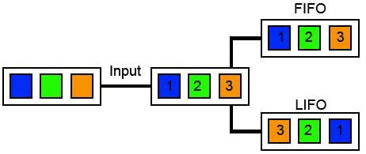

Stos
Stos (ang. Stack) – liniowa struktura danych, w której dane dokładane są na wierzch stosu i z wierzchołka stosu są pobierane (bufor typu LIFO, Last In, First Out;
ostatni na wejściu, pierwszy na wyjściu). Ideę stosu danych można zilustrować jako stos położonych jedna na drugiej książek – nowy egzemplarz kładzie się na wierzch stosu
i z wierzchu stosu zdejmuje się kolejne egzemplarze. Elementy stosu poniżej wierzchołka można wyłącznie obejrzeć, aby je ściągnąć,
trzeba najpierw po kolei ściągnąć to, co jest nad nimi.
Stos jest używany w systemach komputerowych na wszystkich poziomach funkcjonowania systemów informatycznych. Stosowany jest przez procesory do chwilowego
zapamiętywania rejestrów procesora, do przechowywania zmiennych lokalnych, a także w programowaniu wysokopoziomowym.
Przeciwieństwem stosu jest kolejka, bufor typu FIFO (ang. First In, First Out; pierwszy na wejściu, pierwszy na wyjściu), w którym dane
obsługiwane są w takiej kolejności, w jakiej zostały dostarczone (jak w kolejce do kasy).

Jedną z implementacji stosu jako struktury danych jest obszar w pamięci wydzielony dla danego wątku, służący do przechowywania adresów powrotu i zmiennych lokalnych.
Wielkość stosu jest stała w czasie wykonywania programu, ustalana w czasie kompilacji, stąd zdarza się, że program chce zapisać w nim więcej niż przewidziano.
Mówimy wówczas o przepełnieniu stosu.
Podstawowe Operacje
W powyższym opisie pojawiły się pewne operacje, jakie można wykonywać na stosie. Oto ich formalny zapis:
push(obiekt) – czyli odłożenie obiektu na stos;
pop() – ściągnięcie obiektu ze stosu i zwrócenie jego wartości;
isEmpty() - sprawdzenie czy na stosie znajdują się już jakieś obiekty.
Stos
|
Obsługa stosu przez procesory x86
|
Powrót do strony głównej
|
Źródło